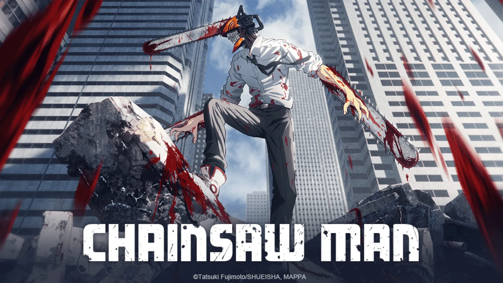
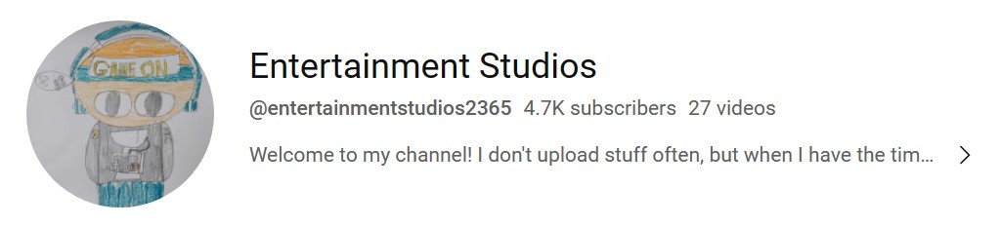

My favorite anime, and favorite movie as of now.

My favorite videogame


My name is Jacob Aldan. I am currently a student at Northern Marianas College. My first dream was to become a film director, now I am aspiring to become an animator.
One of my biggest inspirations into becoming an animator was from watching cartoons growing up, now I watch a lot of anime. I just love learning about the different animation styles and how they are made.
I started my Youtube channel back in 2018. When I first started I wasn't too confident that I would get a lot of subsrcibers, but now in 2023 my channel has over 4k subscribers, wow!!!
